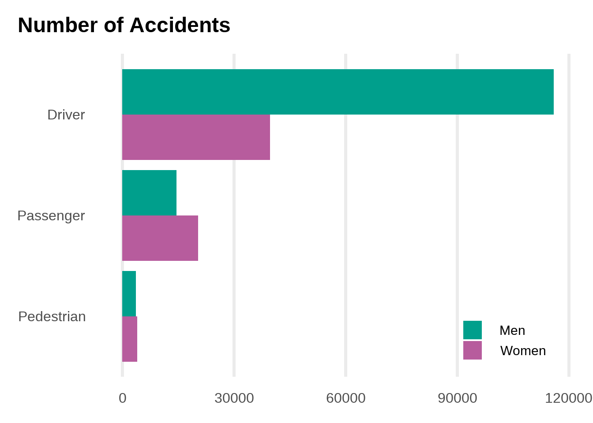

This is an analysis of the Madrid Traffic Accidents dataset. You can find a code for downloading and cleaning the data in code/00_download/ and code/01_cleaning/.
Note
I wrote this code for the workshop “An Advanced Introduction to R” at CEMFI in January 2022. You can find the slides and the materials in the GitHub repository

Logit Regression of Hospitalization and Death
Hospitalization
Died within 24 hours
(1)
(2)
(3)
(4)
(5)
(6)
Passenger
0.026
0.501**
0.475**
−1.697**
−1.445*
−1.440*
(0.100)
(0.069)
(0.068)
(0.616)
(0.631)
(0.631)
Pedestrian
2.117**
2.381**
2.298**
2.190**
2.326**
2.327**
(0.114)
(0.061)
(0.058)
(0.260)
(0.248)
(0.246)
Positive Alcohol
0.007
0.355**
0.381**
−13.685**
−13.421**
−13.460**
(0.072)
(0.081)
(0.081)
(0.059)
(0.055)
(0.054)
Observations
197477
197369
176133
118462
116344
112659
FE: Age Group
X
X
X
X
X
X
FE: Gender
X
X
X
X
X
X
FE: Type of Vehicle
X
X
X
X
FE: Weather
X
X
+ p < 0.1, * p < 0.05, ** p < 0.01
Source Code
---title: Madrid Traffic Accidents Datasetauthor: Kazuharu Yanagimotodate: 2024-03-24categories: [descriptive, traffic accidents]---This is an analysis of the Madrid Traffic Accidents [dataset](https://datos.madrid.es/portal/site/egob/menuitem.c05c1f754a33a9fbe4b2e4b284f1a5a0/?vgnextoid=7c2843010d9c3610VgnVCM2000001f4a900aRCRD&vgnextchannel=374512b9ace9f310VgnVCM100000171f5a0aRCRD&vgnextfmt=default).You can find a code for downloading and cleaning the data in`code/00_download/` and `code/01_cleaning/`.::: {.callout-note}I wrote this code for the workshop "An Advanced Introduction to R"at CEMFI in January 2022. You can find the slides and the materials in the [GitHub repository](https://github.com/kazuyanagimoto/workshop-r-2022):::```{r}library(here)library(tidyverse)library(fixest)library(kableExtra)library(modelsummary)source(here("code", "modules", "graphics.R"))accident_bike <- arrow::read_parquet(here("data", "cleaned", "accident_bike.parquet")) |>filter(!is.na(type_person), !is.na(gender))``````{r}#| classes: preview-imageaccident_bike |>ggplot(aes(x =fct_rev(type_person), fill =fct_rev(gender))) +geom_bar(position ="dodge") +scale_fill_manual(values =c(color_accent, color_base)) +coord_flip() +labs(x =NULL, y =NULL, fill =NULL, title ="Number of Accidents") +theme_notebook() +theme(legend.position =c(0.85, 0.1),panel.grid.major.y =element_blank()) +guides(fill =guide_legend(reverse =TRUE))```## Logit Regression of Hospitalization and Death```{r}models <-list("(1)"=feglm(is_hospitalized ~ type_person + positive_alcohol + positive_drug | age_c + gender,family =binomial(logit), data = accident_bike),"(2)"=feglm(is_hospitalized ~ type_person + positive_alcohol + positive_drug | age_c + gender + type_vehicle,family =binomial(logit), data = accident_bike),"(3)"=feglm(is_hospitalized ~ type_person + positive_alcohol + positive_drug | age_c + gender + type_vehicle + weather,family =binomial(logit), data = accident_bike),"(4)"=feglm(is_died ~ type_person + positive_alcohol + positive_drug | age_c + gender,family =binomial(logit), data = accident_bike),"(5)"=feglm(is_died ~ type_person + positive_alcohol + positive_drug | age_c + gender + type_vehicle,family =binomial(logit), data = accident_bike),"(6)"=feglm(is_died ~ type_person + positive_alcohol + positive_drug | age_c + gender + type_vehicle + weather,family =binomial(logit), data = accident_bike))cm <-c("type_personPassenger"="Passenger","type_personPedestrian"="Pedestrian","positive_alcoholTRUE"="Positive Alcohol")gm <-tibble(raw =c("nobs", "FE: age_c", "FE: gender", "FE: type_vehicle", "FE: weather"),clean =c("Observations", "FE: Age Group", "FE: Gender", "FE: Type of Vehicle", "FE: Weather"),fmt =c(0, 0, 0, 0, 0))modelsummary(models,stars =c("+"= .1, "*"= .05, "**"= .01),coef_map = cm,gof_map = gm) |>add_header_above(c(" ", "Hospitalization"=3, "Died within 24 hours"=3)) |>row_spec(7, hline_after =TRUE)```